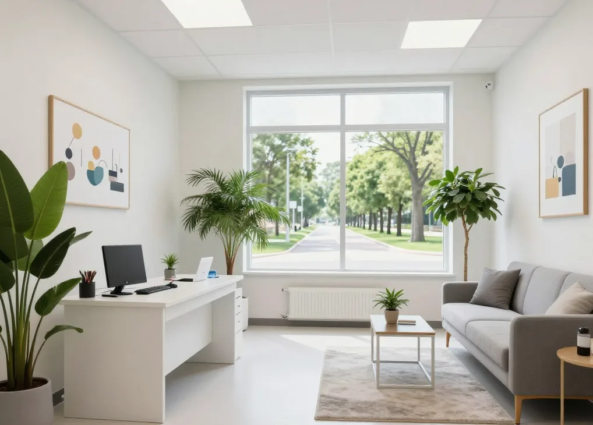
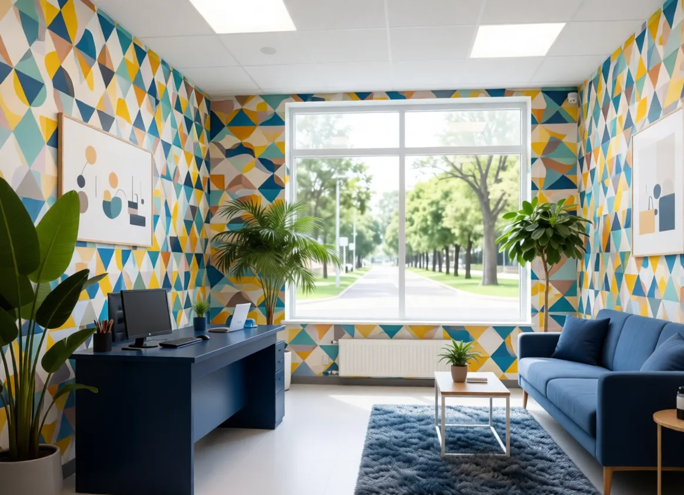

The Focus Room
Home
Sessions
About
Staff
FAQ
Guestbook
Contact
ARCHIVE: SENSORY RECALIBRATION LOGS
Unauthorized viewing is a violation of Wellness Protocol 09.


SYS_MONITOR // AGENT_73
Initializing connection...